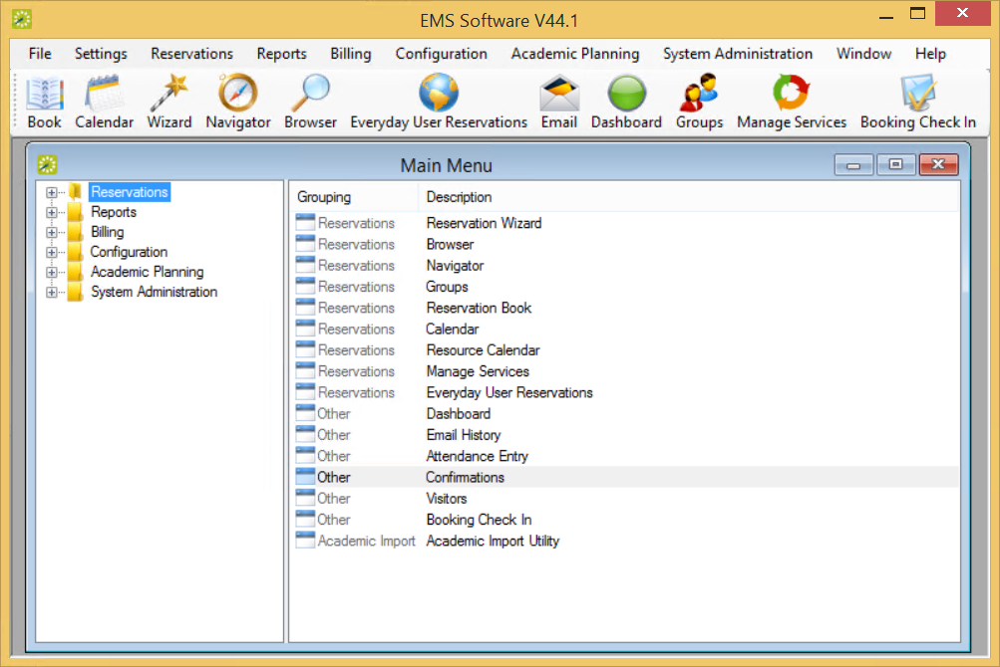
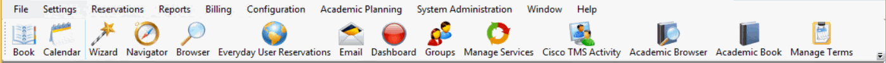
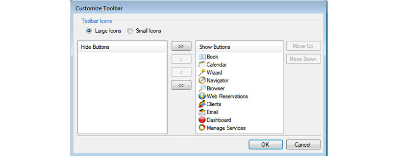
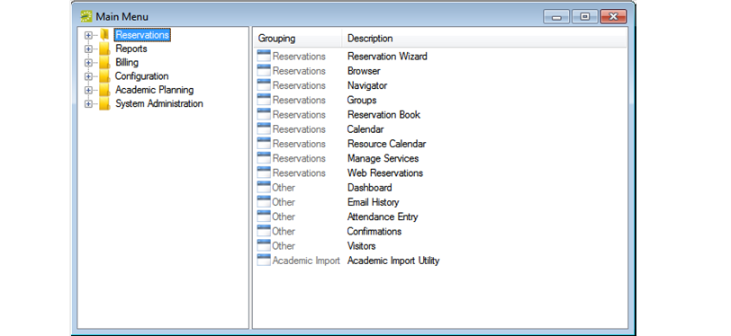
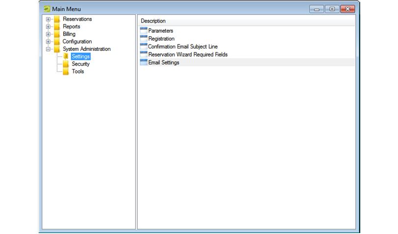

The EMS main window is your starting point for the EMS application. The window provides quick access to all the EMS functions (Reservations, Reports, Configuration, and so on) and system tools. The EMS main window has three major components:
EMS Main Window

The menu bar is set up in a standard Windows menu format with menu commands grouped into menus (File, Settings, Reservations, and so on) across the menu bar. Some of these menu commands are also available in the main menu.
The toolbar provides quick access to the most commonly used EMS functions. The toolbar buttons that are always displayed by default are the buttons for Book, Calendar, Wizard, Navigator, Browser, Everyday User Reservations, Clients, Email, Dashboard, and Manage Services. Other buttons for other functions are also displayed by default depending on the version of EMS that you are running, for example, EMS Campus or EMS Workplace. Some of the functions that are available on the toolbar are also available from the main menu. You can customize the appearance of this toolbar to best suit your business needs. The example below shows some customized buttons.

Tip: Additional buttons may be viewed by clicking the dropdown arrow in the lower right corner of the toolbar.

Tip: You can also move a toolbar icon between the Hide and Show panels by double-clicking the icon. To move all icons from one panel to another in a single step, you do not have to select any icons. Instead, click the appropriate Hide All button (<<) or Show All button (>>)
Every time you open EMS, the main menu opens in the EMS main window. You can access the primary EMS system functions—Reservations, Reports, Billing, Configuration, and System Administration—from the main menu.

The main menu is arranged in a Windows Explorer-style folder structure. The top-level folders are the system functions of Reservations, Reports, Billing, Billing, Configuration, and System Administration. The available tasks for each top-level folder are further organized into subfolders. For example, to carry out a system administration task, you must first open the top-level System Administration folder, and then open the correct subfolder to view the list of available tasks.

You can always close the main menu by clicking Close (x) in the upper right corner of the menu. To open the main menu again, on the EMS menu bar, click File > Show Main Menu.